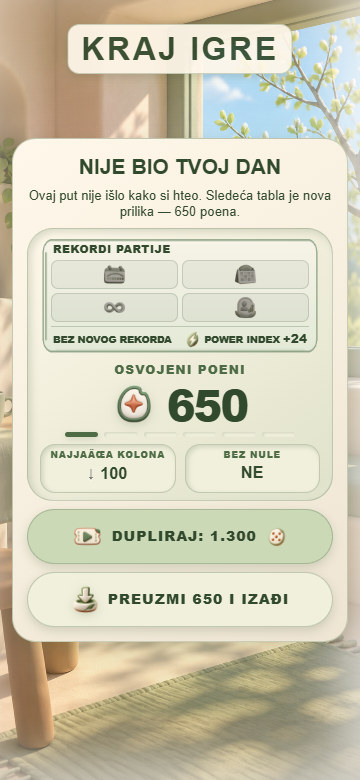

Solo — svih deset tema
Android 360×780 u svih deset tema: ista sačuvana partija, dva ranija upisa (1 i4), zbir5, iste kockice i3/3, tabla, gornji/donji panel, tematski PNG skin, meni sa tri tačke. Green dodatno inline Nastavi/Nova igra, intro i potvrda izlaska. Nema novih bacanja/upisa.
Prethodne lokalne R22/R23 i nove R24/R25 nisu commitovane/deployovane. Android snimci predstavljaju postojeću objavljenu verziju; lokalni prikazi ispod odvojeno pokazuju nove dorade.
Nove lokalne dorade
Stvarni handleGameOver koristio je localResultAccepted izvan if-bloka u kom je let bio deklarisan. ReferenceError je uhvaćen kao greška slanja na Top listu, pa safeSubmitScore nije ni pozvan za lokalni završetak. Deklaracija je podignuta u zajednički opseg. Test stvarnog toka Solo/Hotseat potvrđuje jedan poziv za rezultat vlasnika naloga i ispravan serverVerified za accepted/rejected/pending odgovor, bez stvarnog servera. Izmena ne tvrdi da je stvarna isplata već proverena.
Solo naslov, padding/gap i kratki statistički blokovi sada imaju iste Green mere/fontove, tracking i margine. Dugme preuzimanja ostaje55px i oblina999px u svim temama. PNG oznake rezultata42px i preuzimanja29px prate Green i na kratkim ekranima (ranije28/20px u ostalim temama). Potvrda izlaska dobija Solo kontekst sa istom Green tipografijom i tematskim kontrastom. Green preuzimanje koristi postojeće tamnije tonove: paletni par najmanje5,98:1 umesto3,06:1 na svetlom kraju prethodnog gradijenta. Tabla i funkcije dugmadi nisu promenjene. ModalManager automatski daje Solo kontekst obaveštenjima aktivnog Solo završetka (npr. nagradne/oglasne greške). Skriven Solo i Hotseat/online ekran ne menjaju kontekst drugih soba, što proverava CI test. managers.js?v=6.34. Uklonjene nasleđene tekstualne senke devet tema; PNG volumen/senke i palete ostaju.
PASS400:10tema ×(9završnih stanja + potvrda izlaska) ×320×568/360×640/360×780/412×915. Stvarni handleGameOver/createScoreTables, ModalManager i PNG kontroleri; simulirani odgovori queue/score servisa. Jednake Green mere/fontovi/padding/margine/gap; bez skrola ili izlaska iz safe zone; učitani vidljivi PNG i ispravne oznake postignutih rekorda.
- Završni ekran i isplata nisu sada izazvani na Android nalogu. Postojeća partija nije dovršena; novi kod treba potvrditi posle deploya.
- Intro na Androidu novim kadrom obuhvaćen samo u Green pri Nastavi; zajednička konfiguracija2400/3200ms i putanje za svih10tema proverene statički.
- Nije nova provera svih mogućih skinova, najave/otkazivanja, gubitka mreže ili oglasa uživo; postojeće funkcionalne regresije prolaze.
- Fizički S25 i precizni fps/hladni transfer nisu pregledani. Preostaju Hotseat, Online random i Pozovi prijatelja, kao i ranije otvoreni retki tokovi.
Zelena
Stvarni Android — postojeća objavljena verzija
Lokalni stvarni renderer — test podaci i nove dorade
Svetlo zlato
Stvarni Android — postojeća objavljena verzija
Lokalni stvarni renderer — test podaci i nove dorade
Trula višnja
Stvarni Android — postojeća objavljena verzija
Lokalni stvarni renderer — test podaci i nove dorade
Plavi okean
Stvarni Android — postojeća objavljena verzija
Lokalni stvarni renderer — test podaci i nove dorade
Neon Cyber
Stvarni Android — postojeća objavljena verzija
Lokalni stvarni renderer — test podaci i nove dorade
Kraljevski ametist
Stvarni Android — postojeća objavljena verzija
Lokalni stvarni renderer — test podaci i nove dorade
Vaskršnja
Stvarni Android — postojeća objavljena verzija
Lokalni stvarni renderer — test podaci i nove dorade
Vaskršnja — lokalni renderer / rough-none

Vaskršnja — lokalni renderer / masterful-all
Vaskršnja — lokalni renderer / pending
Vaskršnja — lokalni renderer / zero
Vaskršnja — lokalni renderer / capped
Vaskršnja — lokalni renderer / exit
Pustinjsko staklo
Stvarni Android — postojeća objavljena verzija
Pustinjsko staklo — Android tabla / sačuvana partija
Pustinjsko staklo — Android meni sa tri tačke
Lokalni stvarni renderer — test podaci i nove dorade
Pustinjsko staklo — lokalni renderer / rough-none
Pustinjsko staklo — lokalni renderer / masterful-all
Pustinjsko staklo — lokalni renderer / pending
Pustinjsko staklo — lokalni renderer / zero
Pustinjsko staklo — lokalni renderer / capped
Pustinjsko staklo — lokalni renderer / exit
Mesečev sjaj
Stvarni Android — postojeća objavljena verzija
Mesečev sjaj — Android tabla / sačuvana partija
Mesečev sjaj — Android meni sa tri tačke
Lokalni stvarni renderer — test podaci i nove dorade
Mesečev sjaj — lokalni renderer / rough-none
Mesečev sjaj — lokalni renderer / masterful-all
Mesečev sjaj — lokalni renderer / pending
Mesečev sjaj — lokalni renderer / zero
Mesečev sjaj — lokalni renderer / capped
Mesečev sjaj — lokalni renderer / exit
Severna maglina
Stvarni Android — postojeća objavljena verzija
Severna maglina — Android tabla / sačuvana partija
Severna maglina — Android meni sa tri tačke
Lokalni stvarni renderer — test podaci i nove dorade
Severna maglina — lokalni renderer / rough-none
Severna maglina — lokalni renderer / masterful-all
Severna maglina — lokalni renderer / pending
Severna maglina — lokalni renderer / zero
Severna maglina — lokalni renderer / capped
Severna maglina — lokalni renderer / exit
Dodatni Android dokazi
Postojeća sačuvana partija — Nastavi / Nova igra
Green intro pri nastavku partije
Green potvrda izlaska, objavljena verzija
Vraćena Zelena i originalne mere
Korišćeno Nastavi, bez Nova igra, bacanja, zaustavljanja/upisa, završavanja partije, reklame/nagrade, kupovine ili poziva/poruke. Izlaz lokalnog moda čuva partiju (postojeći showMainMenu/autoSave), potvrda jednom otkazana radi pregleda i potom prihvaćena radi povratka u meni. Nema pristupa auth podacima ili injekcije u emulator.
Zelena vraćena, originalnih1440×3120/560dpi potvrđeno, prijava ostala otvorena. Nove izmene nisu commitovane ili deployovane.